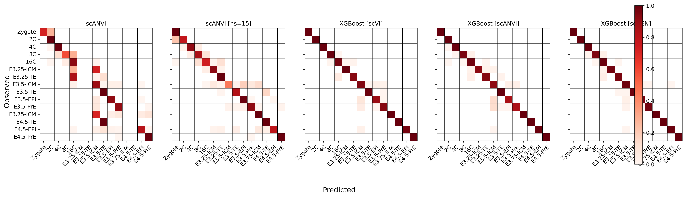
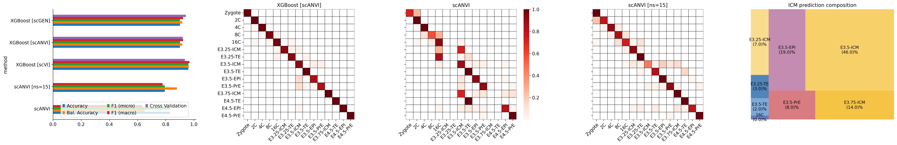
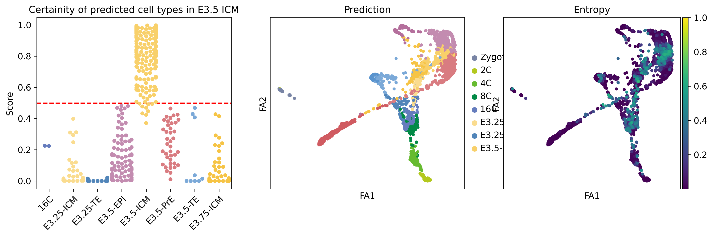
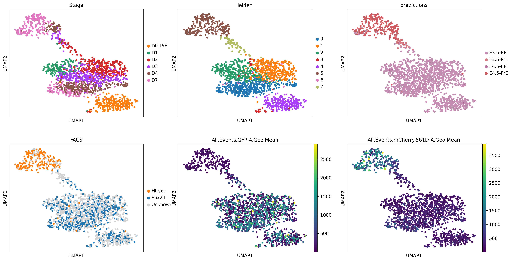
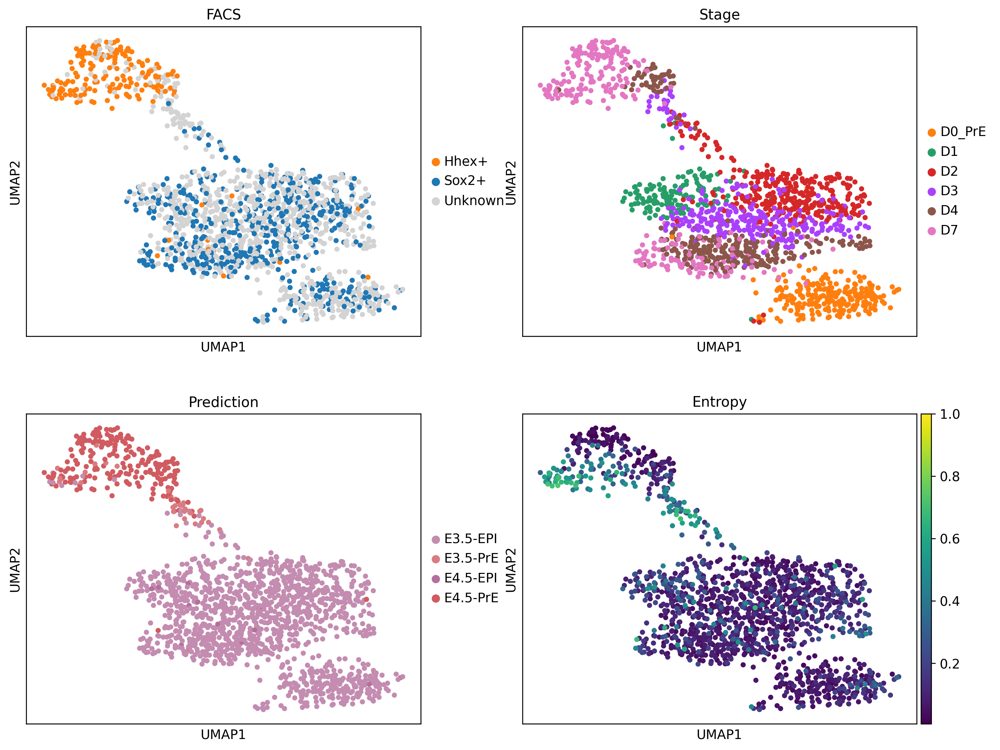
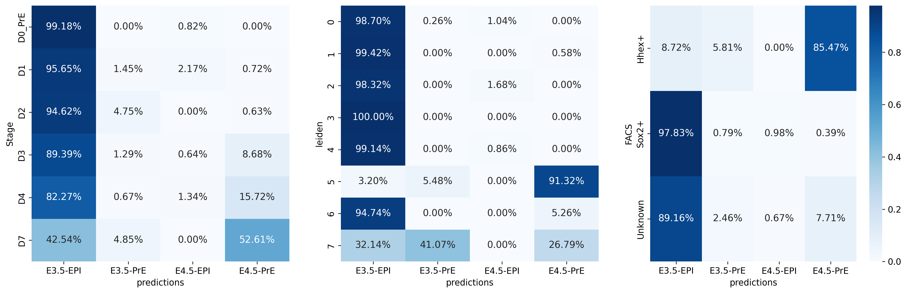
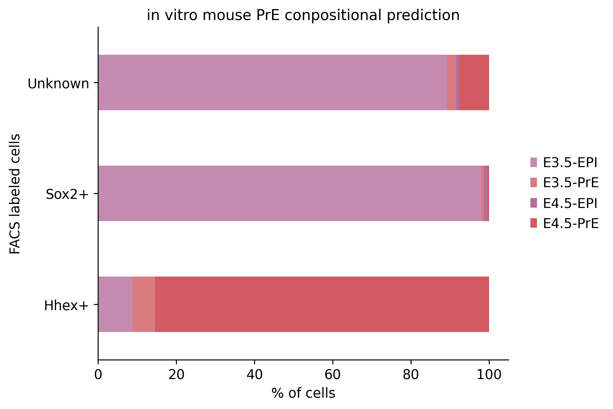

%matplotlib inline
import numpy as np
import pandas as pd
import seaborn as sns
import scvi
import scanpy as sc
import cellrank as cr
import matplotlib.pyplot as plt
from sklearn.preprocessing import MinMaxScaler
import scvelo as scv
scv.set_figure_params('scvelo')
import warnings
warnings.simplefilter("ignore", category=UserWarning)00 - Figures
- Figure 1
- FA plot
- PAGA
- Pseudotime
- Celltype/Stage density
- CellRank
- Markers (literature)
- DEGs
- Leiden clusters
- Celltype compositions
- scib (yosef lab)
- Fig 2
- Schematics of different classifications
- SHAP values
- Fig 3
- Query datasets (in vitro)
- Classification predictions
- AUROC curves/Entropy
from scvi.model import SCANVI%run ../scripts/helpers.pyplt.rcParams['svg.fonttype'] = 'none'
sc.settings.figdir = '../figures/mouse/'
sc.set_figure_params(dpi=120, dpi_save = 300, format='svg', transparent=True, figsize=(6,5))
scv.settings.figdir = '../figures/mouse/'
scv.set_figure_params(dpi=120, dpi_save = 300, format='svg', transparent=True, figsize=(6,5))mouse = sc.read("../results/03_mouse.processed.h5ad")
mouse.obs.stage = mouse.obs.stage.astype('category').cat.reorder_categories(['Zygote', '2C', '4C', '8C', '16C', 'ICM', 'TE', 'EPI', 'PrE'])1 Oocyte counts
- Borensztein contains 32 and 64 cell cells (also contains oocytes, how many?)
- Deng # of occytes
- Xu et al., oocyte + pronuclear
n_oocytes = 0borenszrtein_metadata = pd.read_table("https://ftp.ncbi.nlm.nih.gov/geo/series/GSE80nnn/GSE80810/matrix/GSE80810_series_matrix.txt.gz",
skiprows=31, index_col=0).T
borenszrtein_metadata['SRX'] = borenszrtein_metadata[['!Sample_relation']].iloc[:, :2].agg(' '.join, axis=1).str.extract(r'(SRX[0-9]{6})')
borenszrtein_metadata['ct'] = borenszrtein_metadata['!Sample_characteristics_ch1'].iloc[:, 1].values
borenszrtein_metadata = borenszrtein_metadata.reset_index()deng_oocytes = ['GSM1112766', 'GSM1112767', 'GSM1112768', 'GSM1112769']xue_metadata = pd.read_table("https://ftp.ncbi.nlm.nih.gov/geo/series/GSE44nnn/GSE44183/matrix/GSE44183-GPL13112_series_matrix.txt.gz",
skiprows=35, index_col=0).T
xue_metadata['SRX'] = xue_metadata[['!Sample_relation']].agg(' '.join, axis=1).str.extract(r'(SRX[0-9]{6})')
xue_metadata['ct'] = xue_metadata['!Sample_source_name_ch1']
xue_metadata = xue_metadata.reset_index()n_oocytes += borenszrtein_metadata[borenszrtein_metadata.ct.str.contains('Oocyte')].shape[0]
n_oocytes += len(deng_oocytes)
n_oocytes += xue_metadata[xue_metadata.ct == 'oocyte'].shape[0]print(f'Number of Oocytes in from experiments: {n_oocytes}')mouse.obs.ct.value_counts()2 Figures
# lineage_colors = {
# 'Zygote': '#a24f99',
# '2C': '#55ae6c',
# '4C': '#93b43e',
# '8C': '#ba4a50',
# '16C': '#657cbd',
# 'ICM': '#ffcb5d',
# 'TE': '#5a94ce',
# 'EPI': '#d22a45',
# 'PrE': '#a377b4'
# }
lineage_colors = {
'Zygote': '#7985A5',
'2C': '#B3C81E',
'4C': '#67BB30',
'8C': '#028A46',
'16C': '#657cbd',
'ICM': '#F6C445',
'TE': '#5a94ce',
'EPI': '#B46F9C',
'PrE': '#D05B61'
}
# ct_colors = {
# 'Zygote': '#7985A5',
# '2C': '#B3C81E',
# '4C': '#67BB30',
# '8C': '#028A46',
# '16C': '#657cbd',
# 'E3.25-ICM': '#e5b653',
# 'E3.25-TE': '#5185b9',
# 'E3.5-ICM': '#cca24a',
# 'E3.5-TE': '#406a94',
# 'E3.5-EPI': '#bd253e',
# 'E3.5-PrE': '#926ba2',
# 'E3.75-ICM': '#F6C445',
# 'E4.5-TE': '#5a94ce',
# 'E4.5-EPI': '#B46F9C',
# 'E4.5-PrE': '#D05B61'
# }
ct_colors = {
'Zygote': '#7985A5',
'2C': '#B3C81E',
'4C': '#67BB30',
'8C': '#028A46',
'16C': '#657cbd',
'E3.25-ICM': '#fadc8f',
'E3.25-TE': '#5185b9',
'E3.5-ICM': '#f8d06a',
'E3.5-TE': '#7ba9d8',
'E3.5-EPI': '#c38cb0',
'E3.5-PrE': '#d97c81',
'E3.75-ICM': '#F6C445',
'E4.5-TE': '#5a94ce',
'E4.5-EPI': '#B46F9C',
'E4.5-PrE': '#D05B61'
}
extras = { 'add_outline': True, 'outline_width': (0.16, 0.02) }
mouse.uns['stage_colors'] = list(lineage_colors.values())
mouse.uns['ct_colors'] = list(ct_colors.values())sc.pp.neighbors(mouse, use_rep='X_scVI')
sc.tl.diffmap(mouse)
sc.tl.paga(mouse, groups='ct')
sc.tl.draw_graph(mouse, init_pos='paga', n_jobs=10)sc.pl.draw_graph(mouse, color=['stage', 'timepoint', 'ct'], frameon=True, wspace=0.2)3 DR
sc.pl.draw_graph(mouse, color=['stage', 'leiden', 'ct'], frameon=True, wspace=0.2, save="_dr_.svg")sc.pl.tsne(mouse, color=['stage', 'leiden', 'ct'], frameon=True, wspace=0.2, save="_dr_.svg")sc.pl.umap(mouse, color=['stage', 'leiden', 'ct'], frameon=True, wspace=0.2, save="_dr_.svg")3.1 FA plot
sc.pl.embedding(mouse, basis='X_draw_graph_fa', color=['stage'], title='', legend_loc=None,
frameon=False, **extras, save="_stage.svg")sc.pl.embedding(mouse, basis='X_draw_graph_fa', color='leiden', title='', legend_loc='on data', legend_fontoutline=2,
frameon=False, **extras, save="_leiden.svg")sc.pl.embedding(mouse, basis='X_draw_graph_fa', color='leiden', title='', frameon=False, **extras, save="_leiden_2.svg")mouse.obs['t_scaled'] = MinMaxScaler().fit_transform(mouse.obs['t'].values.reshape(-1, 1)).flatten()
sc.pl.embedding(mouse, basis='X_draw_graph_fa', color=['t_scaled', 'dpt_pseudotime'], title=['scFates pseudotime', 'dpt_pseudotime'],
legend_loc=None, colorbar_loc='right', frameon=True, cmap='viridis', **extras, save="_pseudotimes.svg")sc.tl.embedding_density(mouse, basis='draw_graph_fa', groupby='stage')
sc.pl.embedding_density(mouse, basis='draw_graph_fa', key='draw_graph_fa_density_stage', ncols=3, save='.svg')sc.tl.embedding_density(mouse, basis='draw_graph_fa', groupby='ct')
sc.pl.embedding_density(mouse, basis='draw_graph_fa', key='draw_graph_fa_density_ct', ncols=3, save='.svg')3.2 PAGA
scv.pl.paga(mouse, basis='draw_graph_fa', title="", **extras, frameon=True, save="ct.svg")3.3 scGEN
mouse_scgen = sc.read("../results/02_mouse_integration/scgen/adata.h5ad")
sc.pp.neighbors(mouse_scgen, use_rep='X_scgen')
sc.tl.diffmap(mouse_scgen)
sc.tl.paga(mouse_scgen, groups='ct')
sc.pl.paga(mouse_scgen)
sc.tl.draw_graph(mouse_scgen, init_pos='paga', n_jobs=10)mouse_scgen.uns['stage_colors'] = list(lineage_colors.values())[1:] + [lineage_colors['Zygote']]
sc.pl.embedding(mouse_scgen, basis='X_draw_graph_fa', color=['stage'], title='scGen',
**extras, save="_scgen_stage.svg")4 Trajectory segmentation
import scFates as scf# with plt.rc_context({"figure.figsize": (6, 6)}):
fig, ax = plt.subplots(1, 3, figsize=[18, 5])
scf.pl.dendrogram(mouse,color="seg", show=False, ax=ax[0])
scf.pl.dendrogram(mouse,color="ct", legend_loc="on data", color_milestones=True, legend_fontoutline=True, show=False, ax=ax[1])
sc.pl.embedding(mouse, basis='X_draw_graph_fa', color='seg', ax=ax[2])
fig.tight_layout()
fig.savefig("../figures/mouse/scfates.svg")5 CellRank
from cellrank.kernels import PseudotimeKernel
pk = PseudotimeKernel(mouse, time_key="t")
pk.compute_transition_matrix()
g = cr.estimators.GPCCA(pk)
g.fit(cluster_key="stage", n_states=[4, 12])
g.predict_terminal_states(n_states=3)
g.predict_initial_states(allow_overlap=True)
g.compute_fate_probabilities()mouse.uns['clusters_gradients_colors'] = [lineage_colors['Zygote'], lineage_colors['TE'], lineage_colors['PrE'], lineage_colors['EPI']]
g.plot_fate_probabilities(same_plot=True, basis='X_draw_graph_fa', **extras, legend_loc=False, save="mouse_terminal_stages.svg")g.plot_fate_probabilities(same_plot=False, basis='X_draw_graph_fa', legend_loc=False, **extras, save="mouse_terminal_stages_all.svg")6 Stats: Cell compositions
experiment_stats = mouse.obs.groupby(['experiment', 'stage']).apply(len).unstack().fillna(0).iloc[::-1]
experiment_stats.plot(kind='barh', stacked=True, color=lineage_colors)
for y, x in enumerate(experiment_stats.sum(axis=1).astype(int)):
plt.annotate(str(x), xy=(x + 10, y), va='center')
plt.gca().spines[['right', 'top']].set_visible(False)
plt.gca().legend(frameon=False)
_ = plt.ylabel('Publications')
_ = plt.xlabel('Number of cells')
plt.savefig("../figures/mouse/stats_publications.svg")lineage_stats = mouse.obs.groupby('stage').apply(len).iloc[::-1]
lineage_stats.plot(kind='barh', color=list(lineage_colors.values()))
for y, x in enumerate(lineage_stats.astype(int)):
plt.annotate(str(x), xy=(x + 10, y), va='center')
plt.gca().spines[['right', 'top']].set_visible(False)
_ = plt.ylabel('Lineage')
_ = plt.xlabel('Number of cells')
plt.savefig("../figures/mouse/stats_stages.svg")leiden_stats = sc.metrics.confusion_matrix('stage', 'leiden', data=mouse.obs) * 100
leiden_stats.plot(kind='barh', stacked=True)
plt.gca().spines[['right', 'top']].set_visible(False)
plt.gca().legend(title='Clusters', bbox_to_anchor=(0.99, 1.02), loc='upper left', frameon=False)
_ = plt.ylabel('Lineages')
_ = plt.xlabel('Cluster %')
plt.savefig("../figures/mouse/stats_cluster_vs_lineages.svg")leiden_stats = sc.metrics.confusion_matrix('leiden', 'stage', data=mouse.obs) * 100
leiden_stats.plot(kind='barh', stacked=True, color=lineage_colors)
plt.gca().spines[['right', 'top']].set_visible(False)
plt.gca().legend(title='Clusters', bbox_to_anchor=(0.99, 1.02), loc='upper left', frameon=False)
_ = plt.ylabel('Lineages')
_ = plt.xlabel('Cluster %')
plt.savefig("../figures/mouse/stats_cluster_vs_lineages.svg")sc.pl.embedding(mouse, basis='X_draw_graph_fa', color=['stage', 'leiden'], title='', frameon=False)leiden_stats = sc.metrics.confusion_matrix('leiden', 'stage', data=mouse.obs) * 100
leiden_stats_order = ['13', '12', '7', '1', '11', '6', '0', '14', '2', '5', '4', '9', '8', '3', '10']
leiden_stats.loc[leiden_stats_order[::-1]].plot(kind='barh', stacked=True, color=lineage_colors)
plt.gca().spines[['right', 'top']].set_visible(False)
plt.gca().legend(title='Clusters', bbox_to_anchor=(0.99, 1.02), loc='upper left', frameon=False)
_ = plt.ylabel('Lineages')
_ = plt.xlabel('Cluster %')
plt.savefig("../figures/mouse/stats_cluster_vs_lineages.svg")technology_stats = mouse.obs.groupby('technology').apply(len).sort_values()
technology_stats.plot(kind='barh', color='grey')
for y, x in enumerate(technology_stats.astype(int)):
plt.annotate(str(x), xy=(x + 10, y), va='center')
plt.gca().spines[['right', 'top']].set_visible(False)
_ = plt.ylabel('Technology')
_ = plt.xlabel('Number of cells')
plt.savefig("../figures/mouse/stats_technology.svg")fig, ax = plt.subplots(1, 4, figsize=[20, 4])
# Plot #1
experiment_stats = experiment_stats.loc[experiment_stats.sum(axis=1).sort_values().index.tolist()]
experiment_stats.plot(kind='barh', stacked=True, color=lineage_colors, ax=ax[0])
for y, x in enumerate(experiment_stats.sum(axis=1).astype(int)):
ax[0].annotate(str(x), xy=(x + 10, y), va='center')
ax[0].spines[['right', 'top']].set_visible(False)
ax[0].legend(frameon=False)
ax[0].set_ylabel('Publications')
ax[0].set_xlabel('Number of cells')
# Plot #2
lineage_stats = mouse.obs.groupby('stage').apply(len)
lineage_stats.plot(kind='barh', color=list(lineage_colors.values()), ax=ax[1])
for y, x in enumerate(lineage_stats.astype(int)):
ax[1].annotate(str(x), xy=(x + 10, y), va='center')
ax[1].spines[['right', 'top']].set_visible(False)
ax[1].set_ylabel('Lineage')
ax[1].set_xlabel('Number of cells')
# Plot #3
technology_stats = mouse.obs.groupby('technology').apply(len).sort_values()
technology_stats.plot(kind='barh', color='grey', ax=ax[2])
for y, x in enumerate(technology_stats.astype(int)):
ax[2].annotate(str(x), xy=(x + 10, y), va='center')
ax[2].spines[['right', 'top']].set_visible(False)
ax[2].set_ylabel('Technology')
ax[2].set_xlabel('Number of cells')
# Plot #4
leiden_stats = sc.metrics.confusion_matrix('leiden', 'stage', data=mouse.obs) * 100
leiden_stats.plot(kind='barh', stacked=True, ax=ax[3])
ax[3].spines[['right', 'top']].set_visible(False)
ax[3].legend(title='Clusters', bbox_to_anchor=(0.99, 1.02), loc='upper left', frameon=False)
ax[3].set_ylabel('Lineages')
ax[3].set_xlabel('Cluster %')
fig.tight_layout(w_pad=1)
fig.savefig("../figures/mouse/stats_all.svg")7 Markers
vae = scvi.model.SCVI.load("../results/02_mouse_integration/scvi/", mouse)mouse.layers['scVI_denoised'] = vae.get_normalized_expression(n_samples=10, return_mean=True)7.0.1 Literature
lineage_markers = pd.read_excel("../data/external/mouse_lineage_markers.xlsx", sheet_name="Sheet1").fillna('')[lineage_colors.keys()]
display(lineage_markers)
lineage_markers = {
lineage : mouse.var_names.intersection([str.lower(g) for g in genes])
for lineage, genes in lineage_markers.T.iterrows()
}lineage_markerssc.pl.dotplot(mouse, lineage_markers, groupby='stage', standard_scale='var')
sc.pl.dotplot(mouse, lineage_markers, groupby='stage', standard_scale='var', layer='scVI_denoised')sc.pl.matrixplot(mouse, lineage_markers, groupby='stage', standard_scale='var', cmap='viridis')
sc.pl.matrixplot(mouse, lineage_markers, groupby='stage', standard_scale='var', cmap='viridis', layer='scVI_denoised')pub_markers = {
'Zygote': ['zswim3', 'padi6'],
'2C': ['zfp352', 'zscan4d'],
'4C': ['sox21'],
'8C': ['prdm14', 'pou5f1'],
'16C': ['tfap2c', 'gata3'],
'ICM': ['tfcp2l1', 'pou5f1'],
'TE': ['eomes', 'cdx2'],
'EPI': ['sox2', 'nanog'],
'PrE': ['gata6', 'pdgfra']
}
ax = sc.pl.dotplot(mouse, sum(pub_markers.values(), []), groupby='stage', standard_scale='var', cmap='GnBu', figsize=[12, 3.5], show=False)
_ = ax['mainplot_ax'].set_xticklabels(sum(pub_markers.values(), []), rotation = 45, ha="right", rotation_mode="anchor")
plt.savefig("../figures/mouse/dotplot_pub_markers.svg")8 SCVI DGEs
m_lineage = vae.differential_expression(groupby="stage")
m_lineage_filt = filter_markers(m_lineage, n_genes=10)
display(pd.DataFrame.from_dict(m_lineage_filt, orient='index').transpose())
sc.pl.dotplot(mouse, m_lineage_filt, groupby='stage', dendrogram=False, standard_scale='var')
sc.pl.matrixplot(mouse, m_lineage_filt, groupby='stage', dendrogram=False, standard_scale='var')9 Classifiers
import scgen
import squarify
import matplotlib.cm as cm
from matplotlib.colors import Normalize
import xgboost as xgb
from sklearn.metrics import accuracy_score, balanced_accuracy_score, f1_score
LABELS = ['scANVI', 'scANVI [ns=15]', 'XGBoost [scVI]', 'XGBoost [scANVI]', 'XGBoost [scGEN]']mouse.obs.ct.value_counts()E3.5-ICM 459
E3.5-PrE 254
E4.5-PrE 207
16C 198
E3.5-EPI 175
8C 115
4C 114
E4.5-EPI 108
E3.5-TE 107
2C 86
E3.75-ICM 48
E3.25-TE 47
E3.25-ICM 40
E4.5-TE 28
Zygote 18
Name: ct, dtype: int64predictions = mouse.obs[['ct']].copy()
xg_clf = xgb.XGBClassifier()
lvae = scvi.model.SCANVI.load("../results/02_mouse_integration/scanvi/")
predictions['scANVI'] = lvae.predict()
lvae = scvi.model.SCANVI.load("../results/02_mouse_integration/scanvi_ns_15/")
predictions['scANVI_ns15'] = lvae.predict()
vae = scvi.model.SCVI.load("../results/02_mouse_integration/scvi/")
xg_clf.load_model("../results/02_mouse_integration/05_scVI_xgboost.json")
predictions['xg_scVI'] = predictions.ct.cat.categories[xg_clf.predict(vae.get_normalized_expression(return_mean=True, return_numpy=True))]
lvae = scvi.model.SCANVI.load("../results/02_mouse_integration/scanvi/")
xg_clf.load_model("../results/02_mouse_integration/05_scANVI_xgboost.json")
predictions['xg_scANVI'] = predictions.ct.cat.categories[xg_clf.predict(lvae.get_normalized_expression(return_mean=True, return_numpy=True))]
mscgen = scgen.SCGEN.load("../results/02_mouse_integration/scgen/")
xg_clf.load_model("../results/02_mouse_integration/05_scGEN_xgboost.json")
predictions['xg_scGEN'] = predictions.ct.cat.categories[xg_clf.predict(mscgen.get_decoded_expression())]INFO File ../results/02_mouse_integration/scanvi/model.pt already downloaded
INFO File ../results/02_mouse_integration/scanvi_ns_15/model.pt already downloaded
INFO File ../results/02_mouse_integration/scvi/model.pt already downloaded
INFO File ../results/02_mouse_integration/scanvi/model.pt already downloaded
INFO File ../results/02_mouse_integration/scgen/model.pt already downloaded mouse_accuracy = pd.DataFrame([
[
accuracy_score(predictions.ct.tolist(), predictions[clf].tolist()),
balanced_accuracy_score(predictions.ct.tolist(), predictions[clf].tolist()),
f1_score(predictions.ct.tolist(), predictions[clf].tolist(), average="micro"),
f1_score(predictions.ct.tolist(), predictions[clf].tolist(), average="macro")
] for clf in predictions.columns[1:]
], index=predictions.columns[1:], columns=['Accuracy', 'Bal. Accuracy', 'F1 (micro)', 'F1 (macro)'])
mouse_accuracy| Accuracy | Bal. Accuracy | F1 (micro) | F1 (macro) | |
|---|---|---|---|---|
| scANVI | 0.830339 | 0.649818 | 0.830339 | 0.634290 |
| scANVI_ns15 | 0.793413 | 0.879503 | 0.793413 | 0.777624 |
| xg_scVI | 0.963074 | 0.975837 | 0.963074 | 0.976084 |
| xg_scANVI | 0.941617 | 0.960426 | 0.941617 | 0.963795 |
| xg_scGEN | 0.983034 | 0.984459 | 0.983034 | 0.986173 |
fig, ax = plt.subplots(1, 5, figsize=[20, 6], sharey=True, sharex=False)
for idx, clf in enumerate(mouse_accuracy.index):
conf_df = pd.DataFrame(0, index=predictions.ct.cat.categories, columns=predictions.ct.cat.categories) + sc.metrics.confusion_matrix('ct', clf, data=predictions)
conf_df = conf_df[predictions.ct.cat.categories]
conf_df[conf_df == 0] = np.nan
sns.heatmap(conf_df, linewidths=0.2, cmap='Reds', ax=ax[idx], square=True, cbar=None, linewidth=.5, linecolor='black')
ax[idx].set_title(LABELS[idx])
ax[idx].set_xticklabels(predictions.ct.cat.categories.tolist(), rotation=45, ha="right", rotation_mode="anchor")
fig.colorbar(cm.ScalarMappable(norm=Normalize(0,1), cmap='Reds'), ax=ax.ravel(), fraction=0.048)
fig.supxlabel('Predicted')
fig.supylabel('Observed')
fig.tight_layout()
fig.savefig("../figures/mouse/00_clf_confusion_mat.svg")
# fig, ax = plt.subplots(2, 2, figsize=[9, 9], sharey=True, sharex=True)
# for idx, clf in enumerate(['xg_scVI', 'xg_scANVI', 'xg_scGEN', 'scANVI']):
# sns.heatmap(sc.metrics.confusion_matrix('ct', clf, data=predictions)[predictions.ct.cat.categories],
# linewidths=0.2, cmap='viridis', ax=ax[idx // 2, idx % 2], square=True, cbar=None)
# ax[idx // 2, idx % 2].set_xlabel('')
# ax[idx // 2, idx % 2].set_ylabel('')
# ax[idx // 2, idx % 2].set_title(f'XGBoost [{clf[3:]}]')
# ax[idx // 2, idx % 2].set_xticklabels(predictions.ct.cat.categories.tolist(), rotation=45, ha="right", rotation_mode="anchor")
# ax[1, 1].set_title('scANVI')
# fig.colorbar(cm.ScalarMappable(norm=Normalize(0,1), cmap='viridis'), ax=ax.ravel(), fraction=0.048)
# fig.supxlabel('Predicted')
# fig.supylabel('Observed')
# fig.tight_layout()
# # fig.savefig("../figures/mouse/00_clf_confusion_mat.svg")
fig, ax = plt.subplots(1, 5, figsize=[30, 5])
mouse_accuracy_csv = pd.read_csv("../results/05_mouse_classifier_stats.csv", index_col=0)
mouse_accuracy_csv.columns = ['Accuracy', 'Bal. Accuracy', 'F1 (micro)', 'F1 (macro)', 'Cross Validation']
mouse_accuracy_csv.plot(kind='barh', ax=ax[0])
ax[0].spines[['right', 'top']].set_visible(False)
ax[0].legend(loc='lower center', ncols=3)
ax[0].set_yticklabels(LABELS)
# XGBoost scANVI
conf_df = pd.DataFrame(0, index=predictions.ct.cat.categories, columns=predictions.ct.cat.categories) + sc.metrics.confusion_matrix('ct', 'xg_scANVI', data=predictions)
conf_df = conf_df[predictions.ct.cat.categories]
conf_df[conf_df == 0] = np.nan
sns.heatmap(conf_df, linewidths=0.2, cmap='Reds', ax=ax[1], square=True, cbar=None, linewidth=.5, linecolor='black')
ax[1].set_title(LABELS[3])
ax[1].set_xticklabels(predictions.ct.cat.categories.tolist(), rotation=45, ha="right", rotation_mode="anchor")
# scANVI
conf_df = pd.DataFrame(0, index=predictions.ct.cat.categories, columns=predictions.ct.cat.categories) + sc.metrics.confusion_matrix('ct', 'scANVI', data=predictions)
conf_df = conf_df[predictions.ct.cat.categories]
conf_df[conf_df == 0] = np.nan
sns.heatmap(conf_df, linewidths=0.2, cmap='Reds', ax=ax[2], square=True, cbar=True, linewidth=.5, linecolor='black')
ax[2].set_title(LABELS[0])
ax[2].set_xticklabels(predictions.ct.cat.categories.tolist(), rotation=45, ha="right", rotation_mode="anchor")
ax[2].set_yticklabels([' '] * predictions.ct.cat.categories.size)
# scANVI_ns15
conf_df = pd.DataFrame(0, index=predictions.ct.cat.categories, columns=predictions.ct.cat.categories) + sc.metrics.confusion_matrix('ct', 'scANVI_ns15', data=predictions)
conf_df = conf_df[predictions.ct.cat.categories]
conf_df[conf_df == 0] = np.nan
sns.heatmap(conf_df, linewidths=0.2, cmap='Reds', ax=ax[3], square=True, cbar=None, linewidth=.5, linecolor='black')
ax[3].set_title(LABELS[1])
ax[3].set_xticklabels(predictions.ct.cat.categories.tolist(), rotation=45, ha="right", rotation_mode="anchor")
ax[3].set_yticklabels([' '] * predictions.ct.cat.categories.size)
# ICM zoom
icm_accuracy = (conf_df.loc['E3.5-ICM'].dropna() * 100).sort_values(ascending=True)
squarify.plot(sizes=icm_accuracy,
label=icm_accuracy.index + '\n(' + icm_accuracy.round().values.astype(str) + ')%',
color=[ct_colors[ct] for ct in icm_accuracy.index],
text_kwargs={'fontsize': '10'}, ax=ax[4]
)
ax[4].axis("off")
ax[4].set_title('ICM prediction composition')
fig.tight_layout()
fig.savefig("../figures/mouse/00_clf_accuracy.svg")
lvae = scvi.model.SCANVI.load("../results/02_mouse_integration/scanvi_ns_15/")
lvae.adata.obsm['x_scANVI'] = lvae.get_latent_representation()
sc.pp.neighbors(lvae.adata, use_rep='x_scANVI')
sc.tl.paga(lvae.adata, groups='ct')
sc.tl.draw_graph(lvae.adata)
lvae.adata.obs["predictions"] = lvae.predict()
lvae.adata.obs["predictions"] = lvae.adata.obs["predictions"].astype('category')
lvae.adata.obs.predictions = lvae.adata.obs.predictions.cat.reorder_categories(ct_colors.keys())
lvae.adata.obs['entropy'] = 1 - lvae.predict(soft=True).max(axis=1)INFO File ../results/02_mouse_integration/scanvi_ns_15/model.pt already downloaded icm_entropy = predictions.query('ct == "E3.5-ICM"')[['scANVI_ns15']].copy()
icm_entropy['Score'] = lvae.predict(soft=True).loc[icm_entropy.index, 'E3.5-ICM']
icm_entropy.scANVI_ns15 = icm_entropy.scANVI_ns15.astype('category')fig, ax = plt.subplots(1, 3, figsize=[15, 4])
sns.swarmplot(x='scANVI_ns15', y='Score', palette=[ct_colors[ct] for ct in icm_entropy.scANVI_ns15.cat.categories], data=icm_entropy, ax=ax[0])
ax[0].set_xticklabels(icm_entropy.scANVI_ns15.cat.categories, rotation=45, ha="right", rotation_mode="anchor")
ax[0].legend(frameon=False)
ax[0].axhline(y=0.5, c='r', linestyle='--')
ax[0].set_xlabel('')
ax[0].set_title('Certainity of predicted cell types in E3.5 ICM')
# plot 2, 3
lvae.adata.uns['predictions_colors'] = [ct_colors[ct] for ct in lvae.adata.obs.predictions.cat.categories]
sc.pl.draw_graph(lvae.adata, color='predictions', title='Prediction', show=False, ax=ax[1])
sc.pl.draw_graph(lvae.adata, color='entropy', vmax=1, cmap='viridis', title='Entropy', show=False, ax=ax[2])
plt.savefig("../figures/mouse/00_ICM_prediction_score.svg")No artists with labels found to put in legend. Note that artists whose label start with an underscore are ignored when legend() is called with no argument.
10 Supl. Table 2
writer = pd.ExcelWriter("../results/suppl-tab-2.xlsx", engine="xlsxwriter")
pd.read_csv("../results/05_mouse_classifier_stats.csv", index_col=0).to_excel(writer, sheet_name="mouse_overall")
for clf in mouse_accuracy.index:
df = pd.DataFrame(0, index=predictions.ct.cat.categories, columns=predictions.ct.cat.categories) + sc.metrics.confusion_matrix('ct', clf, data=predictions)
df = df.fillna(0)[predictions.ct.cat.categories]
df.to_excel(writer, sheet_name=f"mouse_{clf}")
writer.close()11 Figure 3 + suppl
11.1 Proks et al.,
vitro = sc.read("../results/06_proks_et_al.h5ad")
vitro.uns['predictions_colors'] = [ct_colors[x] for x in vitro.obs.predictions.cat.categories]vitro.uns['FACS_colors'] = ['#ff7f0e', '#1f77b4', '#D3D3D3']sc.pl.umap(vitro, ncols=3, cmap='viridis',
color=['Stage', 'leiden', 'predictions', 'FACS', 'All.Events.GFP-A.Geo.Mean', 'All.Events.mCherry.561D-A.Geo.Mean'])
sc.pl.umap(vitro, color=['FACS', 'Stage', 'predictions', 'entropy'], ncols=2, vmax=1, cmap='viridis', title=['FACS', 'Stage', 'Prediction', 'Entropy'], save='00_query_proks.svg')WARNING: saving figure to file ../figures/mouse/umap00_query_proks.svg
fig, ax = plt.subplots(1, 3, figsize=[20, 6])
sns.heatmap(sc.metrics.confusion_matrix("Stage", "predictions", vitro.obs), annot=True, fmt='.2%', cmap='Blues', ax=ax[0], cbar=False)
sns.heatmap(sc.metrics.confusion_matrix("leiden", "predictions", vitro.obs), annot=True, fmt='.2%', cmap='Blues', ax=ax[1], cbar=False)
sns.heatmap(sc.metrics.confusion_matrix("FACS", "predictions", vitro.obs), annot=True, fmt='.2%', cmap='Blues', ax=ax[2])<Axes: xlabel='predictions', ylabel='FACS'>
conf_mat = (sc.metrics.confusion_matrix('FACS', 'predictions', vitro.obs) * 100)
conf_mat.plot.barh(stacked=True, color=ct_colors)
plt.legend(conf_mat.columns.str.replace('_', ' '), loc='center right', bbox_to_anchor=(1.25, 0.5), frameon=False)
plt.gca().spines[['right', 'top']].set_visible(False)
plt.xlabel('% of cells')
plt.ylabel('FACS labeled cells')
plt.title('in vitro mouse PrE conpositional prediction')
plt.savefig("../figures/mouse/00_query_facs_predictions.svg")
sc.metrics.confusion_matrix('FACS', 'predictions', vitro.obs, normalize=False).to_csv("../results/00_mouse_query.csv")